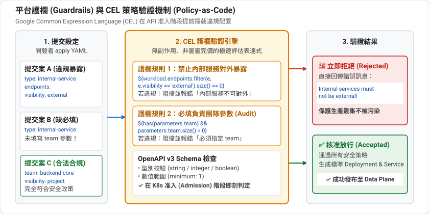
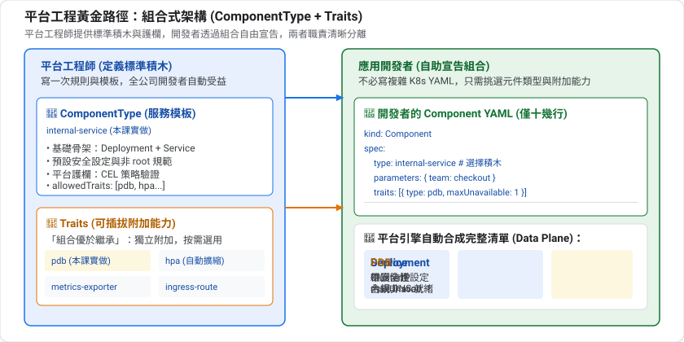
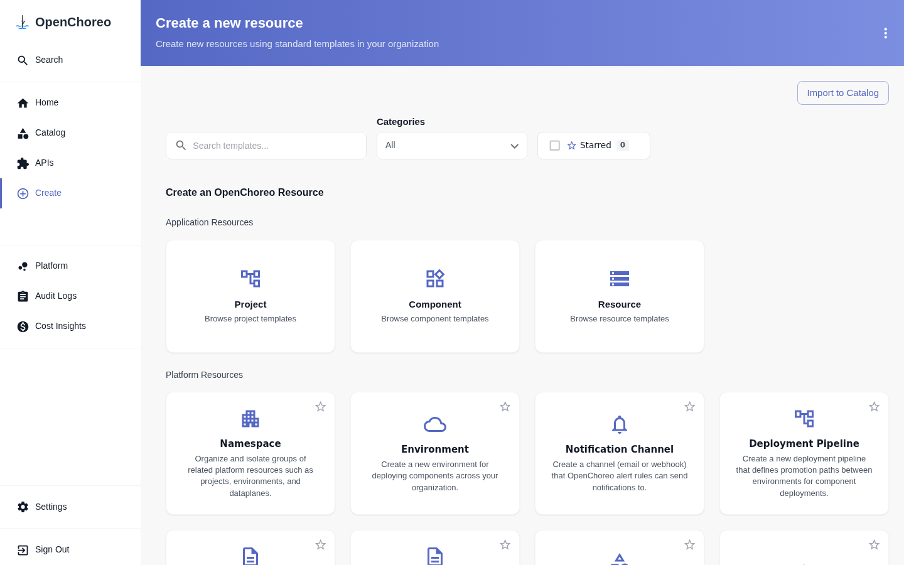

前面幾課我們都是「開發者」,直接使用平台提供的 deployment/service。這一課換成平台工程師:自己定義一個 ComponentType 和一個 Trait,讓開發者只要填幾個參數,就能得到符合團隊規範的部署。
這就是 Golden Path(黃金路徑):把最佳實務包成模板,走這條路最簡單,也最安全。
creates:為元件附加能力parameters 與 environmentConfigs 的差別平台團隊的客戶是公司內部的開發者。好的平台具備:
黃金路徑(Golden Path) | 黃金牢籠(Golden Cage) | |
態度 | 這條路最好走,但你可以選別條 | 只能走這一條 |
結果 | 開發者自願使用 | 開發者想辦法繞過 |
OpenChoreo 的做法是提供模板(ComponentType)讓大部分情況一鍵搞定,同時用 allowedTraits 等欄位限定可附加的能力,在自由與控管之間取得平衡。
「護欄」是阻止你掉下懸崖、但不阻礙你前進的東西。對應到平台:
護欄 | 實現方式 |
必須提供負責團隊 | schema 的 |
數值範圍合理 | schema 的 |
不能對外暴露 |
|
只能用核准的附加能力 |
|

這種「把規則寫成機器可檢查的程式碼」的做法,通稱 策略即程式碼(policy as code)。
1. OpenAPI / JSON Schema(定義輸入的形狀)
parameters.openAPIV3Schema 用 JSON Schema 描述「開發者可以填什麼、型別、預設值、必填與否」。Kubernetes 的 CRD 也用同一套語言,所以驗證是在資源被接受時就做的。
2. CEL(Common Expression Language)
Google 設計的小型表達式語言,語法像 C 或 JavaScript 的運算式,特色是安全、不會無限迴圈、不能有副作用。Kubernetes 本身也用它(例如 ValidatingAdmissionPolicy)。在 OpenChoreo 裡,${...} 包起來的就是 CEL:
寫法 | 意思 |
| 讀取參數 |
| 條件判斷,可用於 |
| 有值才填,沒有就省略欄位 |
| 對每個端點各產生一份資源 |
3. 模板化
ComponentType 是一個「資源模板」:把輸入(參數、Workload)代進去,輸出一組 Kubernetes 資源。
假設有 4 種元件類型、5 種附加能力(自動擴縮、健康檢查...)。如果每個組合都做成一個 ComponentType,要寫 4 × 2⁵ 種。Trait 讓能力獨立存在,需要時才附加到元件上,這就是「組合優於繼承」的設計原則。
資源 | 白話解釋 |
HorizontalPodAutoscaler(HPA) | 依 CPU 等指標自動增減副本數 |
PodDisruptionBudget(PDB) | 規定在「自願性中斷」(例如節點維護、升級)時,至少要保留幾個 Pod 在線,避免一次全部下線 |
角色 | 寫什麼 | 在乎什麼 |
平台工程師 | ComponentType、Trait、Workflow、Environment | 安全、合規、一致性、成本 |
開發者 | Component、Workload | 功能、速度 |

這個分工的美妙之處:平台工程師寫一次規則,所有開發者自動受益;開發者專心在業務,不必記規範。
在入口網站的 Create 頁面中，開發者便可透過自服務門戶直接選用平台工程師定義的各類標準範本：

接下來你要扮演平台工程師。
最好的教材就是現成的範本:
kubectl get clustercomponenttype
kubectl get clustertrait
kubectl get clustercomponenttype service -o yaml
預設有四種 ComponentType(service、web-application、worker、scheduled-task)與五種 Trait(health-probes、horizontal-pod-autoscaler、observability-alert-rule、persistent-volume-claim、vertical-pod-autoscaler)。
service 的骨架可以濃縮成:
區塊 | 作用 |
| 底層 Kubernetes 工作負載種類( |
| 這個類型允許附加哪些 Trait |
| 允許使用哪些建置流程(第 4 課) |
| 每個環境可以覆寫的參數 schema |
| 要產生的資源模板(Deployment、Service、HTTPRoute...) |
| 部署前必須通過的規則 |
resources[].template 內的 ${...} 是 CEL 運算式,常用變數:
變數 | 內容 |
| 產生資源的名稱與 namespace |
| 元件名稱、標準標籤、Pod selector |
| Component 層級的參數(跨環境一致) |
| 環境層級的參數(來自 ReleaseBinding) |
| 開發者寫的 Workload(image、endpoints...) |
| 平台提供的閘道與資料平面資訊 |
另外還有 includeWhen(條件產生)、forEach(迭代產生多個資源)、oc_omit()(省略欄位)、oc_merge()(合併 map)等輔助函式。
Positive : 第 2 課說過的「參數 vs 環境設定」在這裡有了具體樣貌:parameters 寫在 Component 上,environmentConfigs 寫在 ReleaseBinding 上。ComponentType 負責宣告兩者的 schema。
情境:公司有許多內部服務,規範是:
team 標籤)我們建立 internal-service 這個 ComponentType,以及 pod-disruption-budget 這個 Trait。
internal-service.yaml:
apiVersion: openchoreo.dev/v1alpha1
kind: ClusterComponentType
metadata:
name: internal-service
annotations:
openchoreo.dev/description: 只在叢集內提供服務的元件,不產生外部路由,並強制標註負責團隊
spec:
workloadType: deployment
allowedTraits:
- kind: ClusterTrait
name: horizontal-pod-autoscaler
- kind: ClusterTrait
name: pod-disruption-budget
parameters:
openAPIV3Schema:
type: object
required: [team]
properties:
team:
type: string
description: 負責這個服務的團隊,會成為 Pod 的 team 標籤
environmentConfigs:
openAPIV3Schema:
type: object
properties:
replicas:
type: integer
default: 1
minimum: 1
logLevel:
type: string
default: info
enum: [debug, info, warn, error]
validations:
- rule: ${size(workload.endpoints) > 0}
message: internal-service 至少需要一個端點
- rule: ${!workload.endpoints.exists(name, ep, "external" in ep.visibility)}
message: internal-service 不允許 external 端點,請改用 deployment/service
resources:
- id: deployment
targetPlane: dataplane
template:
apiVersion: apps/v1
kind: Deployment
metadata:
name: ${metadata.name}
namespace: ${metadata.namespace}
labels: '${oc_merge(metadata.labels, {"team": parameters.team})}'
spec:
replicas: ${environmentConfigs.replicas}
selector:
matchLabels: ${metadata.podSelectors}
template:
metadata:
labels: '${oc_merge(metadata.podSelectors, {"team": parameters.team})}'
spec:
containers:
- name: main
image: ${workload.container.image}
command: '${has(workload.container.command) ? workload.container.command : oc_omit()}'
args: '${has(workload.container.args) ? workload.container.args : oc_omit()}'
env: '${[{"name": "LOG_LEVEL", "value": environmentConfigs.logLevel}]}'
- id: service
targetPlane: dataplane
template:
apiVersion: v1
kind: Service
metadata:
name: ${metadata.componentName}
namespace: ${metadata.namespace}
labels: ${metadata.labels}
spec:
type: ClusterIP
ports: ${workload.toServicePorts()}
selector: ${metadata.podSelectors}
片段 | 意義 |
| 開發者必須提供 |
|
|
| 兩條規則,違規時整個部署被擋下並顯示訊息 |
| 沒有 HTTPRoute,所以天生不會對外 |
| 把標準標籤與 |
Negative : YAML 引號陷阱。 運算式裡只要出現 ": "(例如 {"team": parameters.team}),整個值就必須用單引號包起來,否則 YAML 解析會失敗:mapping values are not allowed in this context。內建範本也是這樣寫。
Trait 用 creates 附加資源。pdb.yaml:
apiVersion: openchoreo.dev/v1alpha1
kind: ClusterTrait
metadata:
name: pod-disruption-budget
annotations:
openchoreo.dev/description: 為元件建立 PodDisruptionBudget,避免維護時同時下線過多 Pod
spec:
parameters:
openAPIV3Schema:
type: object
properties:
minAvailable:
type: integer
default: 1
minimum: 0
creates:
- targetPlane: dataplane
template:
apiVersion: policy/v1
kind: PodDisruptionBudget
metadata:
name: ${metadata.name}-${trait.instanceName}
namespace: ${metadata.namespace}
labels: ${metadata.labels}
spec:
minAvailable: ${parameters.minAvailable}
selector:
matchLabels: ${metadata.podSelectors}
Trait 可以用 trait.instanceName 區分同一個元件上的多個實例,所以名稱是 ${metadata.name}-${trait.instanceName}。
套用兩者:
kubectl apply -f internal-service.yaml -f pdb.yaml
開發者只需要寫:
apiVersion: openchoreo.dev/v1alpha1
kind: Component
metadata:
name: ledger
namespace: default
spec:
owner:
projectName: default
autoDeploy: true
componentType:
kind: ClusterComponentType
name: deployment/internal-service
parameters:
team: payments
traits:
- kind: ClusterTrait
name: pod-disruption-budget
instanceName: pdb
parameters:
minAvailable: 1
---
apiVersion: openchoreo.dev/v1alpha1
kind: Workload
metadata:
name: ledger-workload
namespace: default
spec:
owner:
componentName: ledger
projectName: default
endpoints:
http:
type: HTTP
port: 9090
visibility: [project]
container:
image: "ghcr.io/openchoreo/samples/greeter-service:latest"
command: ["./go-greeter"]
args: ["--port", "9090"]
kubectl apply -f component.yaml
kubectl get component ledger -n default \
-o jsonpath='{range .status.conditions[*]}{.type}={.status} {.message}{"\n"}{end}'
預期 Ready=True。看看平台替你產生了什麼:
kubectl get deploy,svc,pdb,httproute -A -l openchoreo.dev/component=ledger
預期有 Deployment、Service、PodDisruptionBudget,沒有 HTTPRoute。
驗證標籤與環境變數:
NS=$(kubectl get ns -o name | grep dp-default-default-development | cut -d/ -f2)
kubectl get deploy -n $NS -l openchoreo.dev/component=ledger \
-o jsonpath='{.items[0].metadata.labels.team} {.items[0].spec.template.spec.containers[0].env}{"\n"}'
預期 payments [{"name":"LOG_LEVEL","value":"info"}]。
Positive : 開發者完全沒寫 Deployment、Service 或 PDB。他只回答了「誰負責(team)」和「要不要 PDB」,其餘全由平台決定。
replicas 與 logLevel 是 environmentConfigs,所以改的是 ReleaseBinding,不是 Component:
kubectl patch releasebinding ledger-development -n default --type merge \
-p '{"spec":{"componentTypeEnvironmentConfigs":{"replicas":2,"logLevel":"debug"}}}'
sleep 8
kubectl get deploy -n $NS -l openchoreo.dev/component=ledger \
-o jsonpath='{.items[0].spec.replicas} {.items[0].spec.template.spec.containers[0].env}{"\n"}'
預期 2 [{"name":"LOG_LEVEL","value":"debug"}]。
把端點可見度改成 external:
kubectl patch workload ledger-workload -n default --type json \
-p '[{"op":"replace","path":"/spec/endpoints/http/visibility","value":["external"]}]'
sleep 12
kubectl get releasebinding ledger-development -n default \
-o jsonpath='{range .status.conditions[*]}{.type}={.status} {.reason}: {.message}{"\n"}{end}'
你會看到:
ReleaseSynced=False RenderingFailed: Failed to render resources: component type validation failed:
rule[1] "${!workload.endpoints.exists(...)}" evaluated to false: internal-service 不允許 external 端點,請改用 deployment/service
Positive : 違規的變更不會被部署,已經在跑的資源維持原狀。錯誤訊息就是你在 validations[].message 寫的文字,所以訊息要寫成能告訴開發者「該怎麼辦」。
Negative : 注意 kubectl apply 本身不會失敗,Component 的 Ready 也仍是 True。驗證失敗是反映在 ReleaseBinding 的 ReleaseSynced / Ready 條件上。排錯時請看 ReleaseBinding,不要只看 Component。
改回去:
kubectl patch workload ledger-workload -n default --type json \
-p '[{"op":"replace","path":"/spec/endpoints/http/visibility","value":["project"]}]'
這種錯誤比較早被攔下,在建立 ComponentRelease 時由 admission webhook 拒絕:
kubectl patch component ledger -n default --type json -p '[{"op":"remove","path":"/spec/parameters"}]'
kubectl get component ledger -n default -o jsonpath='{.status.conditions[*].message}{"\n"}'
預期訊息結尾是 parameters do not match ComponentType schema: .team is required。
internal-service 的 allowedTraits 也列了內建的 horizontal-pod-autoscaler。把參數補回去,並附加 HPA:
kubectl patch component ledger -n default --type merge -p '{
"spec":{"parameters":{"team":"payments"},
"traits":[
{"kind":"ClusterTrait","name":"pod-disruption-budget","instanceName":"pdb","parameters":{"minAvailable":1}},
{"kind":"ClusterTrait","name":"horizontal-pod-autoscaler","instanceName":"hpa","parameters":{"replicas":{"min":1,"max":3}}}
]}}'
sleep 12
kubectl get hpa,pdb -A | grep ledger
預期同時看到 HPA(1 到 3 個副本、CPU 80%)與 PDB。
Negative : 刻意不放進 allowedTraits 的 Trait 不能使用,這是平台工程師限制開發者可用能力的方式。本課沒有實測「使用不在白名單的 Trait」會得到什麼錯誤。HPA 顯示 cpu: 只是剛建立、metrics 尚未就緒,稍後會有數值。
kubectl delete component ledger -n default
kubectl delete workload ledger-workload -n default --ignore-not-found
kubectl delete clustercomponenttype internal-service
kubectl delete clustertrait pod-disruption-budget
試著不看上文回答下面的問題;答不出來的,回頭看對應的章節。
parameters 與 environmentConfigs 有何不同?": " 時 YAML 要注意什麼?ReleaseSynced=False、RenderingFailed),Component 本身仍可能是 Ready,且已部署的資源不變。mapping values are not allowed。你已經:
internal-service ComponentType 與 pod-disruption-budget Trait概念 | 一句話 |
ComponentType | 把「一個元件長什麼樣」寫成模板 |
Trait | 可重複附加的能力 |
parameters / environmentConfigs | 元件層級與環境層級的輸入 |
validations | 違規就不部署的護欄 |
allowedTraits | 限制開發者可用的能力 |
09:微服務實戰 — 部署官方的多服務範例,練習依賴與排錯。